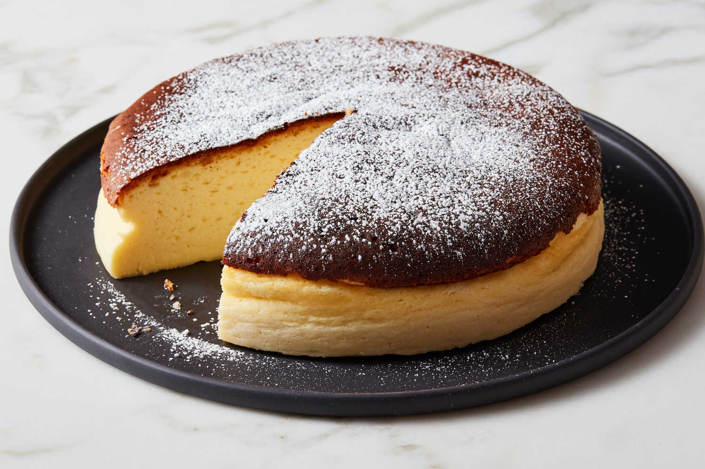

Cheesecake

Ingredients
- cream cheese
- ricotta
- eggs
- sugar
- graham crackers
Steps to Follow
- Make sure that a cat is always present for the atmosphere as it makes everything taste better
- Mix all ingredients at once
- Pop it into the oven for like 1000 degrees as it cooks faster
- You are done! :D